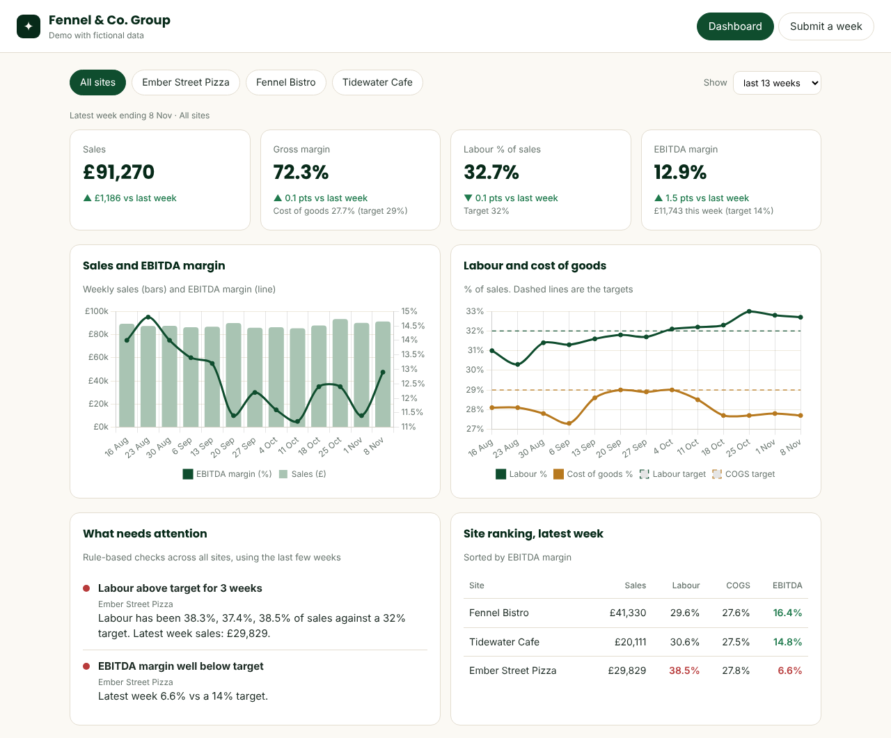
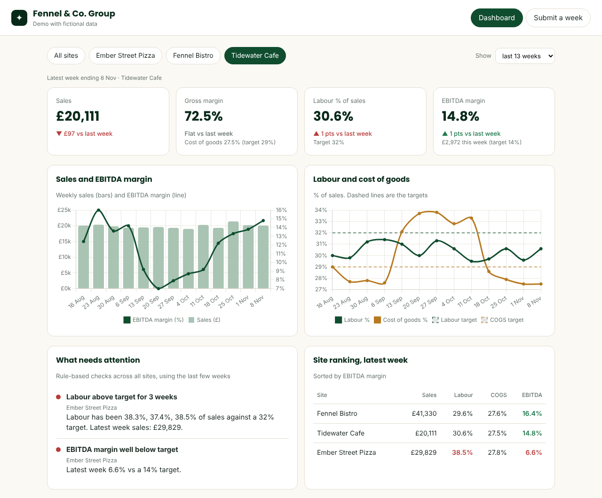
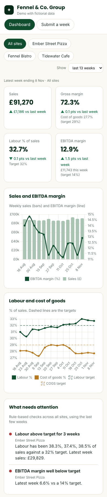

Seeing margin problems while they are still small
A weekly performance dashboard for a restaurant group, built end to end: the data model, the calculations, the charts, the alerts and a form for site managers to submit their numbers.
The demo uses fictional data for an invented company, Fennel & Co. Group.

The problem
Multi-site hospitality owners often see how each site performed weeks after the fact, from spreadsheets that every manager formats differently. By the time a labour or food-cost problem shows up, it has already cost several weeks of margin.
The questions an owner needs answered every Monday are simple: which site is doing best and worst, whether labour or cost of goods is drifting from target, and whether it is a one-off or a trend.
What I built
- One weekly P&L per site, rolled up to group level, so sales, gross margin, labour % and EBITDA mean the same thing everywhere.
- A dashboard with week-on-week KPIs, trend charts against targets and a site ranking.
- A "what needs attention" panel driven by three plain rules, so a manager can see exactly why something was flagged.
- A submission form where each manager enters only their own site's week, with validation built in.
What the data revealed
In the demo data, one site's labour cost climbed from about 31% to 38% of sales over eleven weeks while its sales softened, which cut its EBITDA margin from around 16% to under 7%. Another site had a five-week food-cost spike that roughly halved its margin before recovering.
A monthly report would have averaged both away. The weekly view makes them obvious.


Decisions I made
- Calculated metrics, never typed-in ones. The sheet holds raw inputs only, so margins can never disagree with each other.
- Simple rules over fancy models. A site manager has to trust a flag before acting on it, and an explainable rule earns that trust.
- Phone-friendly from the start. Managers submit their numbers from a phone, so the form and the dashboard both work on a small screen.

What I would change for real use
- Replace the demo sign-in with Google accounts or an identity provider, and restrict the app to the organisation.
- Add roles, so a manager sees their own site and the owner sees all of them.
- Set targets per site, since a café and a full-service restaurant should not share one labour target.
- Pull sales from the till system instead of typing them in.
Built with
- Google Sheets
- Google Apps Script
- JavaScript
- Chart.js
- Python